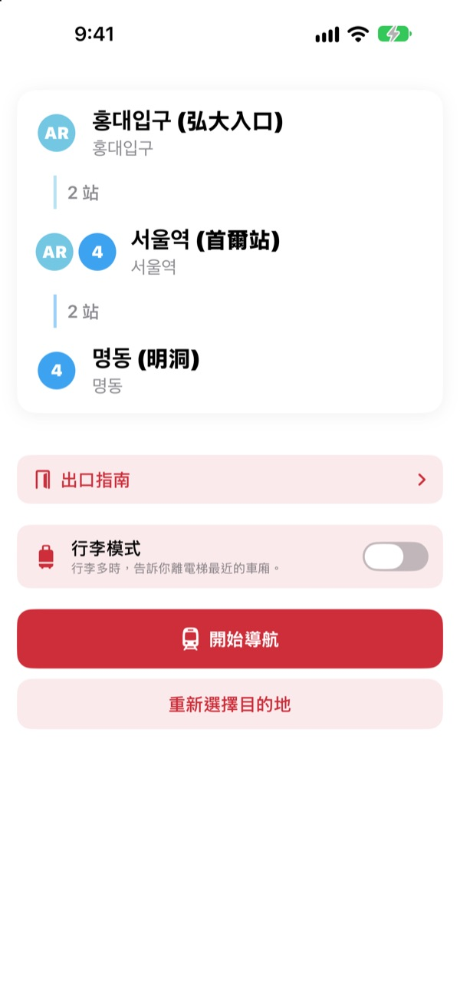
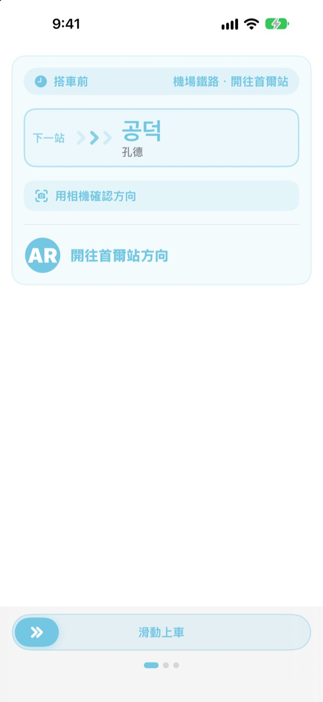
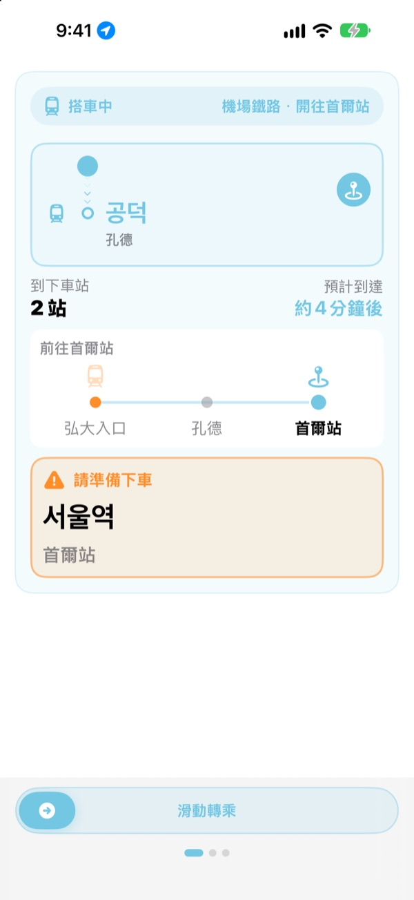
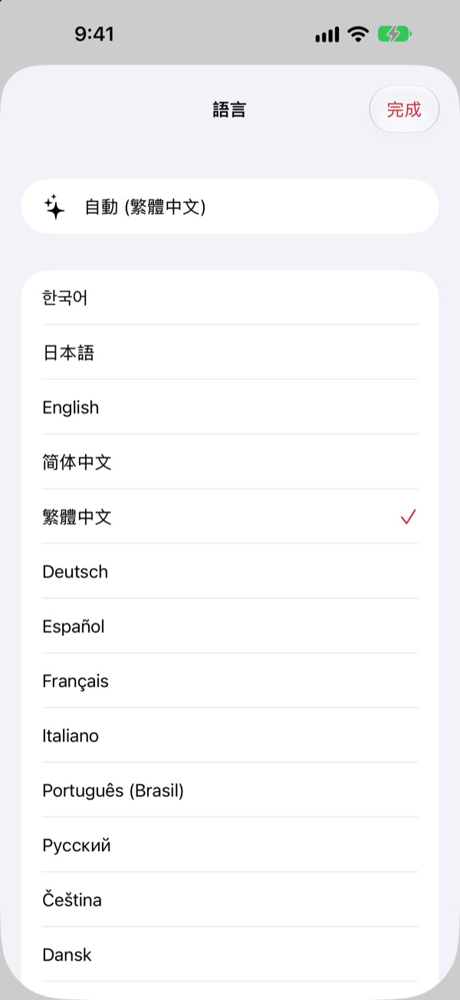

從搭車方向
到下車站
選好出發站和目的站，KORA 就照月台上「開往○○」的原樣告訴你該搭哪班車。搭車時它會追蹤你所在的車站，快到站時提醒你下車。
路線查詢、搭車方向和即時到站資訊都免費。

試搭一趟
從機場鐵路弘大入口站出發。選一個下車站，點「開始導航」，就能像在 App 裡一樣依序看到搭車方向和下車提醒。
站在月台上，不知道該搭哪個方向？
地圖 App 只告訴你路線，月台上卻只有寫著陌生站名的「開往○○」指示牌。搭反方向就得折返好幾站，沒聽清楚廣播又會坐過站。KORA 用和指示牌一樣的說法告訴你該搭哪班車，快到站時先提醒你。
和指示牌一樣的說法
該搭的列車直接照月台和車身上「開往○○」的原樣顯示。不確定時，把相機對準月台指示牌或列車終點站顯示，馬上就知道方向對不對。
文字辨識完全在 iPhone 上完成。

不再坐過站
結合即時到站資訊、GPS、列車的發車與停車以及車內廣播，隨時知道你在哪一站。快到站時提示「請準備下車」，到站時提示「請立即下車!」，並搭配震動。
在鎖定畫面和動態島上也能看到行程進度。

23 種語言，站名保留原文
整個 App 支援 23 種語言，預設跟隨手機語言。站名在韓文原名旁顯示漢字、片假名或站牌上的羅馬拼音，在月台上一眼就能對上。

三個步驟就能開始
- 1
決定出發站
用 GPS 找到最近的車站，或自己選。
- 2
選擇目的站
轉乘、站數和該搭的列車立刻顯示。
- 3
點「開始導航」
該下車時，畫面和震動會提醒你。
各項權限的用途
- 定位
- 尋找最近的車站
- 相機
- 讀取月台指示牌和列車終點站顯示，確認方向
- 麥克風與語音辨識
- 從車內廣播聽出站名和開門方向
- 動作與健身
- 偵測列車發車與停車，讓目前車站更準確
所有權限都可以不開。就算不允許，也能自己選站，照樣使用路線指引和下車提醒。定位、相機和廣播都只在裝置上處理，不會錄音、儲存或傳送。
查路線永遠免費，搭車導航用 KORA Pro
免費
- 路線查詢與轉乘指引
- 該搭列車的「開往○○」顯示
- 即時到站資訊
- 用相機確認方向
- 搭車時的目前車站與下車提示畫面
- 前三次行程可使用全部 Pro 功能
KORA Pro
- 每次行程都有鎖定畫面導航、廣播辨識和下車震動提醒
- 出口指南：首爾地鐵 1～8 號線各出口周邊地點
- 末班車提醒：1～9 號線末班車時間
- 行李模式：1～8 號線離電梯最近的車廂
一次購買，長期使用，不是訂閱。
免費次數用完後照樣可以搭車。畫面上的進度顯示不變，只暫停鎖定畫面導航、廣播辨識和震動。
常見問題
找不到最近的車站，或顯示了錯的車站
請前往 設定 > 隱私權與安全性 > 定位服務 > KORA，選擇「使用App期間」，並開啟「精確位置」。在地下或大型建築內 GPS 可能不準，可以點畫面上方的目前車站卡片自己選站。不開定位也能使用所有功能。
怎麼用相機確認方向？
顯示路線後打開相機確認方向，讓月台指示牌或列車終點站顯示（「開往○○」）佔滿畫面。對準韓文標示時最準確。太暗、太遠或角度太斜時，請靠近一點正對著拍。結果僅供參考，不確定時請一併看看站內指示牌。
即時到站資訊沒有出現
即時到站資訊由首爾開放資料廣場提供，需要網路，主要涵蓋首爾都會區路線。沒有網路或該路線沒有即時資訊時，KORA 會自動改用依時刻表的推估以及 GPS 和加速度計，繼續為你導航。路線查詢不需要網路。
下車提醒有點早或有點晚
地下區段 GPS 訊號弱，目前車站的判斷可能延遲。允許使用麥克風後，KORA 會利用車內廣播修正位置，更加準確。提醒僅供參考，請同時留意廣播和站名標示。
怎麼切換語言？
預設跟隨手機語言。在主畫面長按車站卡片（目前車站或目的站）就會打開語言選擇，可從 23 種語言中挑選。
鎖定畫面上看不到即時動態
請到 設定 > App > KORA（較舊的 iOS 版本為 設定 > KORA），確認「即時動態」已開啟。開始搭車導航後才會出現，完全關閉 App 時也會一起結束。動態島只會在有此功能的 iPhone 上顯示。
支援哪些城市？
首爾都會區（首爾、京畿、仁川，含 GTX-A、機場鐵路、新盆唐線和輕軌）、釜山、大邱、光州、大田，共約 930 個車站。可以用選站畫面上方的地區標籤切換城市。
出發去韓國前可以先試用嗎？
可以。自己選好出發站和目的站，在世界任何地方都能先查看路線、轉乘和搭車方向。
KORA Pro 是訂閱嗎？
不是。一次購買就能長期使用，也支援家人共享。重新安裝 App 後，在 Pro 頁面點「回復購買」即可。
個人資料如何處理？
不需要註冊帳號，也沒有廣告。定位、相機和廣播辨識都在裝置上處理，不會儲存或傳送。為了改善 App，我們只收集匿名的使用統計。
支援輔助使用嗎？
KORA 支援旁白（VoiceOver）和較大字體。也歡迎隨時提供輔助使用方面的改善建議。
缺少車站、站名有誤或有其他問題，歡迎寫信到 mizzking75@gmail.com。附上 App 版本、iPhone 機型和搭乘的車站，我們能更快處理。